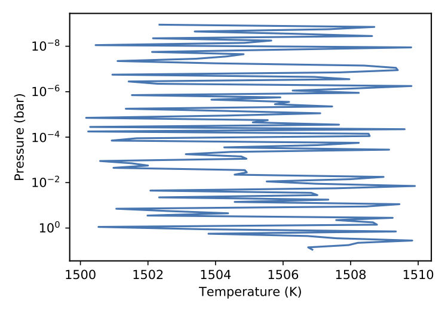
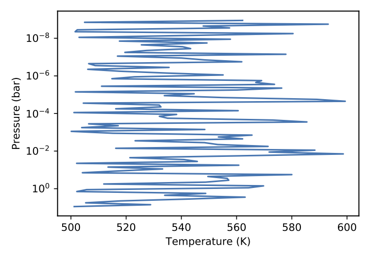
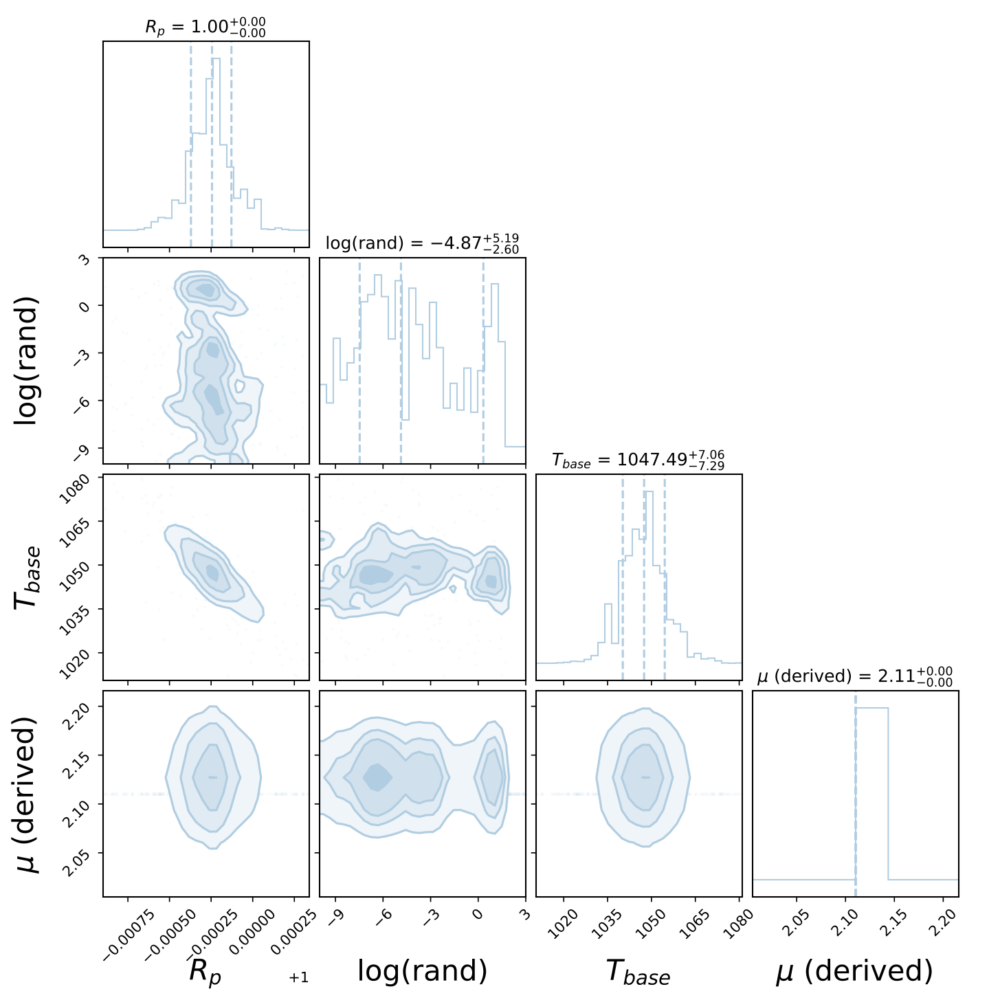

Custom Types¶
Direct Method¶
Across many of the atmospheric parameters/sections you’ll
come across the custom type. These allow you to inject your
own code to be used in the forward model and retrieval scheme.
Developing or wrapping your own parameters is discussed in the Developers guide.
Lets take a simple example. Imagine you have your own amazing temperature profile and you’ve written a TauREx 3 class for it:
from taurex.temperature import TemperatureProfile
from taurex.core import fitparam
import numpy as np
class RandomTemperature(TemperatureProfile):
def __init__(self, base_temp=1500.0,
random_scale=10.0):
super().__init__(self.__class__.__name__)
self._base_temp = base_temp
self._random_scale = random_scale
# -----Fitting Parameters--------------
@fitparam(param_name='rand_scale',param_latex='rand')
def randomScale(self):
return self._random_scale
@randomScale.setter
def randomScale(self, value):
self._random_scale = value
@fitparam(param_name='base_T',param_latex='$T_{base}$')
def baseTemperature(self):
return self._base_temp
@baseTemperature.setter
def baseTemperature(self, value):
self._base_temp = value
# -------Actual calculation -----------
@property
def profile(self):
return self._base_temp + \
np.random.rand(self.nlayers) * self._random_scale
Ok ok this is a terrible temperature profile, essentially it is randomizing around a base temperature given but I digress. We can easily include it in taurex by pointing it to the file:
[Temperature]
profile_type = custom
python_file = /path/to/rand_temperature.py
Thats it!! When you change a type (i.e profile_type, model_type etc.) to custom
the new keyword python_file is available which should point to the python file with the class
you want. We can run TauREx3 with it and see that it has indeed accepted it:
taurex -i input.par -o randtemp_test.h5
taurex-plot -i randtemp_test.h5 -o myplots/ --plot-tpprofile
Which gives:

Truly terrible¶
Now we can do a little more with this as well. When TauREx3 is given
a new class it will scan for initialization keywords and embed them as new input keywords.
Looking at the class, the initialization keywords are base_temp and random_scale
this means we can put them as parameters in the input file:
[Temperature]
profile_type = custom
python_file = /path/to/rand_temperature.py
base_temp = 500.0
random_scale = 100.0
And plotting again we see that the profile has now changed to reflect this:

Truly terrible at 500.0 K¶
Finally, it is entriely possible to perform retrievals with our new profile,
since TauREx3 will also discover new fitting parameters. Our profile
has the fitting parameters base_T and rand_scale so we can add them to our
[Fitting] section:
[Fitting]
planet_radius:fit = True
planet_radius:bounds = 0.8, 2.0
base_T:fit = True
base_T:bounds = 500.0, 3000.0
rand_scale:mode = log
rand_scale:fit = True
rand_scale:bounds = 1e-10, 1000.0
Of course we get all the benefits of native fitting parameters like the ability
to switch between linear and log scale. Now we can perform a retrieval
and plot posteriors like so:
taurex -i input.par -o randtemp_retrieval.h5 --retrieval
taurex-plot -i randtemp_retrieval.h5 -o myplots_retrieval/ --plot-posteriors

Truly terrible posteriors¶
Which correctly adds in the latex parameters as well, it even inserted log for us!
Of course the retrieval just went ahead and tried to minimize the randomness which makes sense!
Almost all parameters have some custom functionality. The ones that do not have this
are [Binning] and [Global].
Try it out!
Here is the full input.par file:
[Global]
xsec_path = /path/to/xsecfiles
cia_path = /path/to/ciafiles
# ----Forward Model related -----------
[Chemistry]
chemistry_type = taurex
fill_gases = H2,He
ratio = 4.8962e-2
[[H2O]]
gas_type = constant
mix_ratio=1.1185e-4
[[N2]]
gas_type = constant
mix_ratio = 3.00739e-9
[Temperature]
profile_type = custom
python_file = rand_temperature.py
base_temp = 1000.0
random_scale = 100.0
[Pressure]
profile_type = Simple
atm_min_pressure = 1e-4
atm_max_pressure = 1e6
# Use 10 layers to keep retrieval time down
nlayers = 10
[Planet]
planet_type = Simple
planet_mass = 1.0
planet_radius = 1.0
[Star]
star_type = blackbody
[Model]
model_type = transmission
[[Absorption]]
[[CIA]]
cia_pairs = H2-He,H2-H2
[[Rayleigh]]
# ---------Creating an observation for retrieval--------
# We use instruments to create an observation
# Rather than passing in a text file
[Binning]
bin_type = manual
accurate = False
wavelength_res = 0.6,4.1,100 # Start end
[Instrument]
instrument = snr
SNR = 20
[Observation]
taurex_spectrum = self
# ------Retrieval related --------------
[Optimizer]
optimizer = nestle
# Use small number of live points to minimize
# retrieval time
num_live_points = 50
[Fitting]
planet_radius:fit = True
planet_radius:factor = 0.8, 2.0
base_T:fit = True
base_T:bounds = 500.0, 3000.0
rand_scale:mode = log
rand_scale:fit = True
rand_scale:bounds = 1e-10, 1000.0
Extension Path Method¶
Another way to include your own code is by setting the extension_path
variable under [Global]. If our python file exists in a folder say:
mycodes/
rand_temperature.py
We can set the path to extension_path variable to point to the folder:
[Global]
extension_path = /path/to/mycodes/
We will need to make one small modification and add the input_keywords class method
to our temperature profile. (See basics):
@classmethod
def input_keywords(cls):
return ['my-random-temperature',]
TauREx will now search for .py files in the directory, attempt to load them and then automatically
integrate them into the TauREx pipeline!!! We can use the value return by input_keywords to select our
profile:
[Temperature]
profile_type = my-random-temperature
base_temp = 1000.0
random_scale = 100.0
Cool!!!
Limitations¶
The custom system is intended for quick development and inclusion of new components or file formats. There are as few limitations when using it.
First each file is loaded in isolation, therefore referencing another python file in the same directory will yield errors, for example if we have this directory:
mycodes/
rand_temperature.py
util.py
And we attempt to import util in rand_temperature.py then it will fail.
The Direct Method does not support loading in Opacity and
Contribution types.
If you feel like you need more control and flexibility with your extensions or if it is useful to the community as a whole then we suggest trying Plugin Development